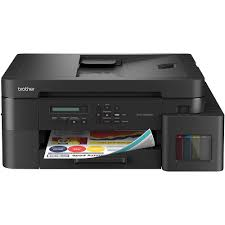

Empresas fazem produtos durarem menos para você comprar mais. Isso gera bilhões em lixo eletrônico.
Produtos são feitos para quebrar ou parar de funcionar após certo tempo.
Atualizações fazem seu aparelho parecer ultrapassado, mesmo funcionando.
Consertar custa mais caro que comprar outro, incentivando o descarte.
O lixo eletrônico é um dos resíduos que mais cresce no mundo. Milhões de celulares, computadores e outros aparelhos são descartados todos os anos, muitas vezes de maneira incorreta. Quando esses dispositivos são jogados no lixo comum, substâncias tóxicas como chumbo, mercúrio e cádmio podem contaminar o solo, os rios e até a água consumida pelas pessoas, causando sérios danos ao meio ambiente e à saúde humana. Além disso, a fabricação constante de novos aparelhos exige a extração de recursos naturais como ouro, cobre e lítio. Esse processo provoca desmatamento, destruição de habitats naturais e aumento da poluição causada pelas indústrias. A obsolescência programada também contribui para o problema, incentivando a troca frequente de dispositivos que muitas vezes ainda poderiam ser utilizados ou consertados. Por isso, atitudes como reutilizar aparelhos, descartar corretamente em pontos de coleta e apoiar a reciclagem eletrônica são fundamentais para reduzir os impactos ambientais e preservar o planeta para as futuras gerações.
A obsolescência programada pode ser combatida através de atitudes conscientes tanto das empresas quanto dos consumidores. Uma das principais formas é apoiar o Direito ao Reparo, permitindo que celulares, computadores e outros aparelhos possam ser consertados com facilidade, sem a necessidade de troca imediata. Outra solução importante é comprar produtos mais duráveis e de marcas que ofereçam suporte e atualizações por mais tempo. Isso aumenta a vida útil dos dispositivos e reduz o descarte precoce. Também é fundamental reutilizar e reciclar aparelhos eletrônicos corretamente. Muitas peças e materiais podem ser reaproveitados, diminuindo a extração de recursos naturais e a quantidade de lixo eletrônico no planeta. Evitar trocas desnecessárias, fazer manutenção dos dispositivos e optar por produtos usados ou recondicionados também ajudam a reduzir o consumo excessivo. Além disso, a conscientização da população sobre os impactos ambientais da obsolescência programada é essencial para incentivar hábitos mais sustentáveis e pressionar empresas a produzirem tecnologias mais responsáveis.
A obsolescência programada está presente em vários aparelhos do dia a dia, principalmente nos smartphones, que com o tempo ficam lentos e apresentam falhas, incentivando a troca por modelos novos. Baterias, impressoras, fones e carregadores também costumam ter vida útil reduzida ou difícil manutenção. Além disso, a indústria tecnológica incentiva constantemente o consumo de novos produtos. Tudo isso aumenta o consumo excessivo, o lixo eletrônico e os impactos ambientais causados pelo descarte incorreto desses aparelhos.
